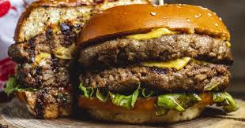

Hamburger

Description
A hamburger is a sandwich consisting of a cooked meat patty on a bun or roll. You can order a hamburger, fries, and a shake at most fast food restaurants. Hamburgers are traditionally made with ground beef and served with onions, tomatoes, lettuce, ketchup, and other garnishes.
- Pound of hamburger meat.
- Your favorite condiments.
- Sides of your choice.
- Thaw hamburger meat.
- Turn thawed meat into patties then season.
- Cook on grill for best flavor.
- Serve up america's sandwich with an ice cold beverage and enjoy your college football weekend!